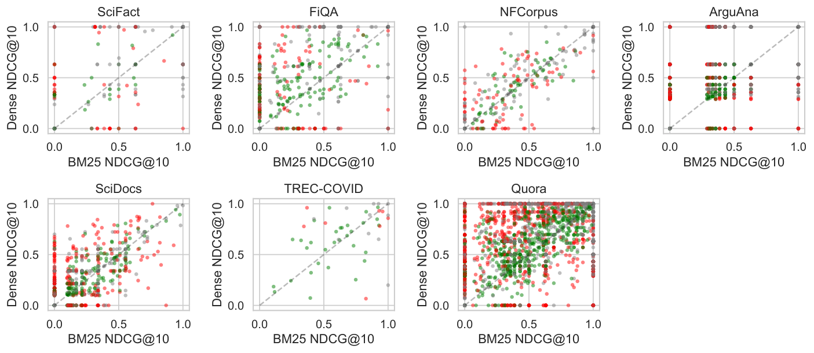
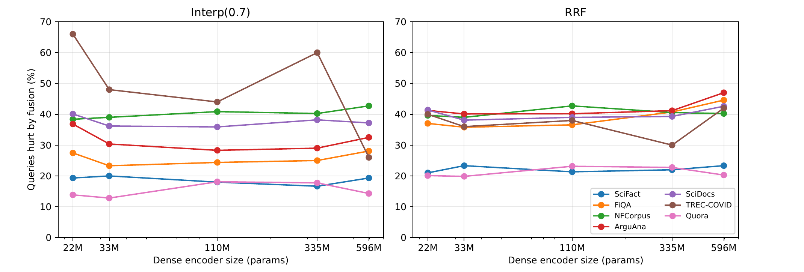

混合检索把 BM25 这类按词匹配的稀疏检索和向量检索的结果融合成一个排序。Elasticsearch、Azure AI Search 和 LangChain 的文档都把倒数排名融合（RRF）列为推荐或唯一的融合方式，依据是平均指标上的提升。这篇论文换了一种记账方式：逐条查询比较融合前后的 nDCG@10，把“不融合”也当作一个正式选项。作者在 7 个 BEIR 数据集上用标准的 Anserini BM25 和 BGE-small 向量模型测试，表现最好的融合方式是向量分数占 0.7 权重的分数插值，它在每个数据集的平均 nDCG@10 上都赢过只用向量检索，涨幅 0.008 到 0.051；但在同样的设置下，8–21% 的查询比只用向量检索排得更差，13–48% 的查询比当条查询上较好的那一路更差。作者把这部分逐条损失叫作“融合税”。损失集中在只有一路检索命中相关文档的查询上，另一路此时只贡献噪声。把向量编码器换大、把 BM25 换成 SPLADE、在融合后加交叉编码器重排，这笔税都没有消失。
1. 平均分涨了，为什么还要逐条看
平均 nDCG@10 上涨，只说明被帮到的查询比被伤到的多，不说明没有查询被伤到。对 RAG 系统来说这个区别有实际后果：一条查询的相关文档如果被融合挤出前 10 名，生成模型拿到的上下文里就没有答案，这条查询的回答质量直接下降，而平均分看不出这件事。
作者因此给每条查询算两笔账。第一笔以“当条最优”为参照：同一条查询上 BM25 和向量检索哪一路更好，就拿哪一路和融合结果比。这个参照要事后才知道，用来衡量融合有没有把更好的那一路拉低。第二笔以“一直只用向量检索”为参照，这是线上真能部署的替代方案，用来回答“加上 BM25 到底值不值”。
2. 记账方法：一个公式、四个象限
单条查询的融合税定义为两路中较好那一路的 nDCG@10 减去融合后的 nDCG@10：
其中 是稀疏检索（BM25）， 是向量检索， 是融合结果。 表示融合比当条较好的一路差。 的查询占比叫“当条最优税”；融合后低于纯向量检索的查询占比叫“可部署税”。
融合方式比较三种。RRF 按名次的倒数相加，常数取 60。分数插值先把两路各自前 100 名的分数做最小-最大归一化（每一路的最高分记 1、最低分记 0），再按 加权相加，稠密检索的权重 。一篇文档如果只进了其中一路的前 100 名，论文没有交代另一路的分数怎么补，常见做法是记 0。CombMNZ 把归一化分数相加后，再乘以命中该文档的检索器个数。
为了找出损失出在哪里，作者按“每一路有没有把至少一篇相关文档放进前 10”把查询分成四个象限：两路都命中（Both-Win）、只有向量检索命中（Dense-Only）、只有 BM25 命中（Sparse-Only）、两路都没命中（Both-Fail）。

稀疏端用的是 Anserini 默认参数的 BM25（k1=0.9，b=0.4，标题和正文分字段索引），作者确认它复现了 BEIR 公开结果到小数点后 4 位，这样就排除了“BM25 没调好才拖后腿”的解释。向量端主实验用 BGE-small（33M 参数），另有 MiniLM（22M）、BGE-base（110M）、BGE-large（335M）和 Qwen3-Embedding-0.6B（596M），全部用 FAISS 精确搜索。7 个数据集分别是 SciFact（科学论断核查）、FiQA（金融问答）、NFCorpus（医学营养检索）、TREC-COVID（新冠文献检索）、ArguAna（找反驳论点）、SciDocs（论文引用推荐）和 Quora（重复问题检索），查询数从 TREC-COVID 的 50 条到 Quora 的 10,000 条。
3. 实验
3.1 平均分：插值确实赢
这组实验先确认融合在平均指标上是否像通常说的那样有效。做法是在 7 个数据集上，用 BGE-small 比较两路单独检索和三种融合的 nDCG@10（论文 Table V）：
| 数据集 | BM25 | 纯向量 | RRF | 插值 α=0.7 | CombMNZ |
|---|---|---|---|---|---|
| SciFact | 0.6647 | 0.7200 | 0.7152 | 0.7307 | 0.7230 |
| FiQA | 0.2361 | 0.3848 | 0.3667 | 0.4087 | 0.3872 |
| NFCorpus | 0.3254 | 0.3371 | 0.3570 | 0.3547 | 0.3574 |
| ArguAna | 0.4142 | 0.5950 | 0.5549 | 0.6027 | 0.5702 |
| SciDocs | 0.1581 | 0.1973 | 0.1954 | 0.2070 | 0.1976 |
| TREC-COVID | 0.6559 | 0.6660 | 0.8010 | 0.7166 | 0.8045 |
| Quora | 0.7886 | 0.8878 | 0.8695 | 0.8997 | 0.8857 |
分数插值在 7 个数据集上都高于纯向量检索。RRF 只在 NFCorpus 和 TREC-COVID 上高于纯向量检索，这两个数据集上 BM25 和向量检索水平接近（TREC-COVID 上是 0.656 对 0.666）；在另外 5 个数据集上，RRF 低于纯向量检索。RRF 只看名次不看分数，向量检索明显更强时，它仍把 BM25 的名次当作同样可信，向量端的优势因此被稀释。
3.2 逐条账：平均分上涨的背后有多少查询变差
这组实验检验平均分上涨的同时，有多少查询被伤到、伤得多重。做法是对插值和 RRF 逐条查询比较，参照分别是纯向量检索和当条最优（论文 Table VIII）：
| 数据集 | 插值比纯向量差的占比 | 变差时平均损失 | 插值比纯向量好的占比 | 平均净变化 | 插值低于当条最优的占比 | RRF 比纯向量差的占比 |
|---|---|---|---|---|---|---|
| SciFact | 10.0% | 0.205 | 14.7% | +0.0107 | 20.0% | 15.3% |
| FiQA | 14.7% | 0.100 | 23.1% | +0.0239 | 23.3% | 30.4% |
| NFCorpus | 18.3% | 0.044 | 33.4% | +0.0177 | 39.0% | 23.8% |
| ArguAna | 19.1% | 0.213 | 21.8% | +0.0077 | 30.4% | 32.9% |
| SciDocs | 20.9% | 0.070 | 26.1% | +0.0097 | 36.2% | 27.6% |
| TREC-COVID | 14.0% | 0.054 | 72.0% | +0.0506 | 48.0% | 26.0% |
| Quora | 8.2% | 0.167 | 12.4% | +0.0119 | 12.8% | 16.2% |
以 ArguAna 为例，插值让 19.1% 的查询变差，变差的查询平均下降 0.213，和变好查询的平均涨幅 0.221 几乎一样大，平均净变化只剩 +0.0077。平均分上的小幅上涨，是大批查询的大涨和大跌相互抵消后剩下的差额。
有人会怀疑 0.7 这个权重是在测试数据上挑出来的。作者用留一数据集交叉验证重新选权重：在其余 6 个数据集上选出 ，再用到第 7 个上。这样得到的可部署税是 11–25%，比固定 0.7 时略高，说明这笔税不是在测试集上调参造成的。风险敏感检验 TRisk 的做法是：逐条查询算融合相对纯向量检索的 nDCG@10 变化，变好的照常计入，变差的损失乘以 再计入（作者取 ），然后检验这个加权后的平均是否显著小于零。按这个标准，插值在 7 个数据集中的 6 个上显著比纯向量检索风险更高，尽管它的平均分更高。
3.3 损失出在哪个象限
这组实验检验损失来自哪类查询。做法是按第 2 节的四个象限拆分插值的逐条损益（论文 Table VII）。结果：只有 BM25 命中的查询不超过总数的 7%，但其中 87–95% 被融合伤到，象限内平均净损失 0.14 到 0.37。原因是向量端在这些查询上的前 10 名里没有相关文档，0.7 的向量权重把 BM25 找到的相关文档压了下去。只有向量命中的查询是镜像情况，BM25 成了噪声源，38–65% 被伤到。两路都命中的查询里，有 10–48% 被重新排序，帮和伤两个方向几乎抵消，象限净变化在 −0.04 到 +0.01 之间；因为这个象限的查询最多，它贡献了 38–72% 的变差查询。
这些损失主要来自名次变化，而不是相关文档丢了。前 10 名召回率真正下降的查询只占 1–7%，多数情况是相关文档还在前 10 名里，只是被往后挪了几位。所有数据集加起来，相关文档被全部挤出前十的查询只有 77 条，所以融合税主要是排序变差，而不是召回变差。
3.4 编码器换大，税不变

这组实验检验融合税是不是只因为向量模型太弱。做法是把向量编码器从 22M 逐级换到 596M，再把 BM25 换成学习型稀疏检索 SPLADE 重做。结果：用 Qwen3-Embedding-0.6B 时，插值仍让 14–43% 的查询低于当条最优；换成 SPLADE 后，6 个数据集上是 14–41%，TREC-COVID 上是 60%。编码器变强只改变两路的强弱对比，而强弱对比决定了在每条查询上哪一路沦为噪声，所以被伤到的查询比例没有随编码器变大而下降。
3.5 能不能提前判断哪些查询不该融合
如果能提前预测，就可以按查询路由：该融合的融合，其余只用向量检索。这组实验检验这条路是否可行。做法是从每条查询提取 17 个推理时就能拿到的特征（查询长度、词的 IDF 统计、两路第 1 名和第 2 名的分差、两路前 10 名的重合度等），训练梯度提升树来预测融合是否会失败。“失败”的定义是：这条查询上融合的 nDCG@10 比两路里较好的那一路低 0.01 以上。结果：同一数据集内的 AUC 是 0.63，跨数据集降到 0.59，最低 0.49，接近随机；17 个特征里有 11 个在不同数据集上与失败的关联方向相反。用这些特征做的路由器在任何数据集上都没有超过固定插值。一个具体例子是向量端的分数领先幅度，即向量检索第 1 名和第 2 名的相似度之差：在向量检索更强的数据集上，它预示融合安全；在 TREC-COVID 上，它却预示融合会失败。
3.6 加重排能不能补救
这组实验检验在融合后接一个交叉编码器重排，能否修复融合造成的损失。做法是用 BGE-reranker-v2-m3 重排前 30 名。重排后参照也换成重排过的纯向量检索，再统计融合低于它的查询比例。这个可部署税只在 SciFact 上降了三分之一，在 FiQA 和 TREC-COVID 上没有降，仍有 16% 和 22% 的查询低于重排后的纯向量检索。原因是重排一边修复旧的损失，一边制造新的损失。以 FiQA 为例，原来被融合伤到的 95 条查询里，重排修好了 75 条，却又新伤了 81 条，等于白忙。重排之后，候选来自插值还是纯向量检索，nDCG@10 几乎没有差别（不超过 0.011），说明有了重排，融合这一步基本可以省掉。代价是延迟：交叉编码器重排 30 个候选约需 1.6 秒，而 BM25 每条查询只要几毫秒。
4. 局限
作者列出的局限有五条：只评估了检索排序，没有评估最终的答案生成；只试了一个重排模型和一个重排深度；TREC-COVID 只有 50 条查询，占比数字波动大；耗时只在一台机器上测量；预测实验只用了廉价特征，没有试大模型判断。
另外两点需要注意。第一，7 个数据集都是英文 BEIR 数据集，查询多是自然语言问题，向量检索在其中 7 个上都强于 BM25；在电商、代码搜索这类关键词查询多的场景里，只有 BM25 命中的查询可能远多于 7%，象限比例和推荐的权重都需要重新测。第二，3.3 节显示大部分损失是相关文档在前 10 名内后移，如果下游把前 10 篇全部放进生成模型的上下文，这部分损失对答案的影响会小很多，这正是作者没有评估生成端留下的空白。
5. 实践意义
一是上混合检索之前，先在目标语料上测两路各自的 nDCG@10。作者的建议是，如果向量检索领先 0.04 以上，就用偏向向量的分数插值（向量权重 0.6–0.7）；两路接近时，再用 RRF、CombMNZ 或等权插值。做这个判断不需要大量标注，200–400 条查询就够了。这组权重换到别的数据集上也基本适用：用其余 6 个数据集选出的权重，比在该数据集上直接调出的最优权重，nDCG@10 最多只低 0.014（TREC-COVID 例外，低 0.031），所以不必每个语料都重新调。
二是上线评估时，除了平均分，再报告“比纯向量检索变差的查询占比”和“变差时的平均损失”。这两个数字能直接看出平均分上涨是靠多数查询小涨，还是靠一部分查询大涨抵消另一部分大跌。